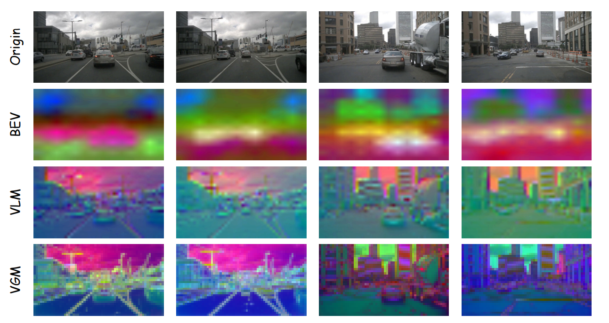
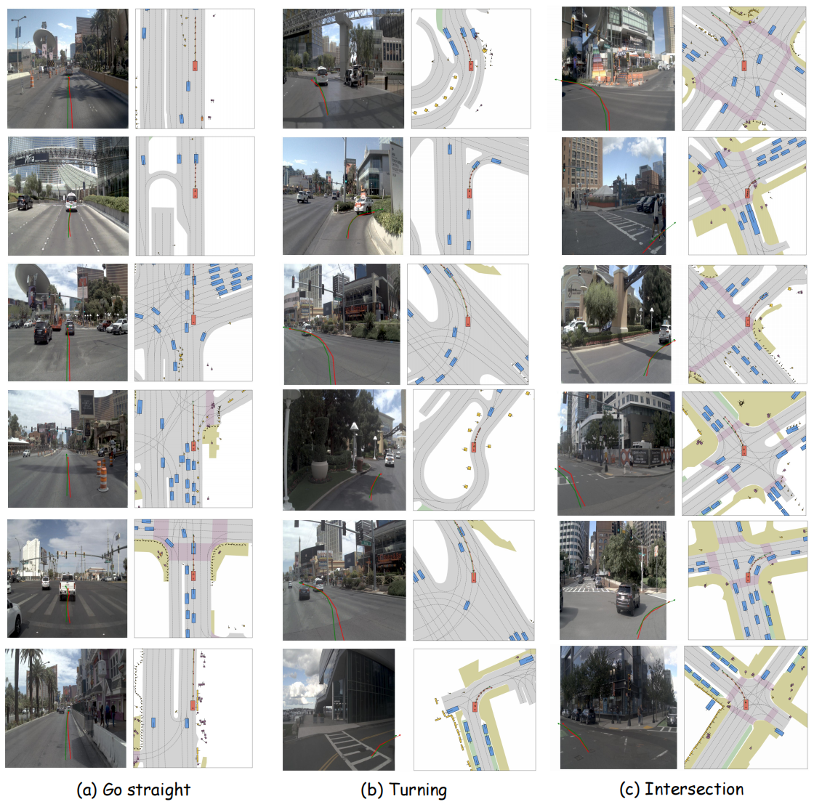
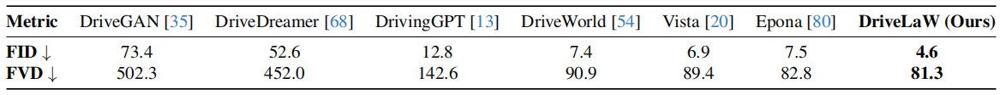
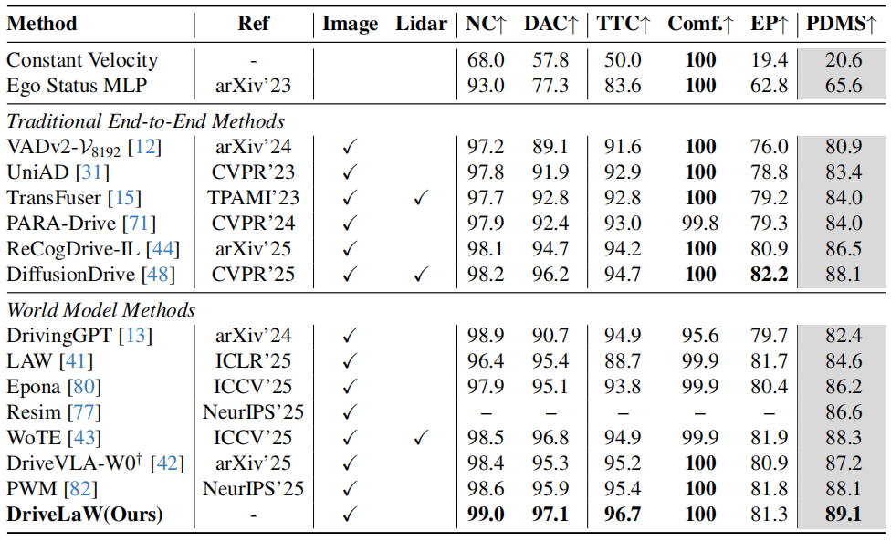

[CVPR 2026] DriveLaW:
Unifying Planning and Video Generation in a Latent Driving World
Abstract
World models have become crucial for autonomous driving, as they learn how scenarios evolve over time to address the long-tail challenges of the real world. However, current approaches relegate world models to limited roles: they operate within ostensibly unified architectures that still keep world prediction and motion planning as decoupled processes. To bridge this gap, we propose DriveLaW, a novel paradigm that unifies video generation and motion planning. By directly injecting the latent representation from its video generator into the planner, DriveLaW ensures inherent consistency between high-fidelity future generation and reliable trajectory planning. Specifically, DriveLaW consists of two core components: DriveLaW-Video, our powerful world model that generates high-fidelity forecasting with expressive latent representations, and DriveLaW-Act, a diffusion planner that generates consistent and reliable trajectories from the latent of DriveLaW-Video, with both components optimized by a three-stage progressive training strategy. The power of our unified paradigm is demonstrated by new state-of-the-art results across both tasks. DriveLaW not only advances video prediction significantly, surpassing best-performing work by 33.3% in FID and 1.8% in FVD, but also achieves a new record on the NAVSIM planning benchmark.
Motivation

Framework

Common Video Generation on nuScenes
Clip1
Clip2
Clip3
Clip4
Rainy Video Generation on nuScenes
Clip1
Clip2
Qualitative results on the Navtest benchmark

Video Generation Results

Planning Results

BibTeX
@article{xia2025drivelaw,
title={DriveLaW: Unifying Planning and Video Generation in a Latent Driving World},
author={Xia, Tianze and Li, Yongkang and Zhou, Lijun and Yao, Jingfeng and Xiong, Kaixin and Sun, Haiyang and Wang, Bing and Ma, Kun and Ye, Hangjun and Liu, Wenyu and others},
journal={arXiv preprint arXiv:2512.23421},
year={2025}
}